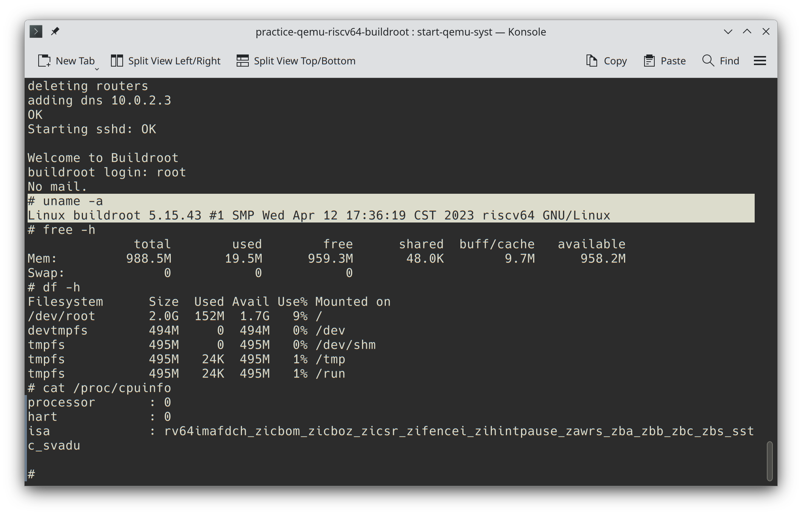
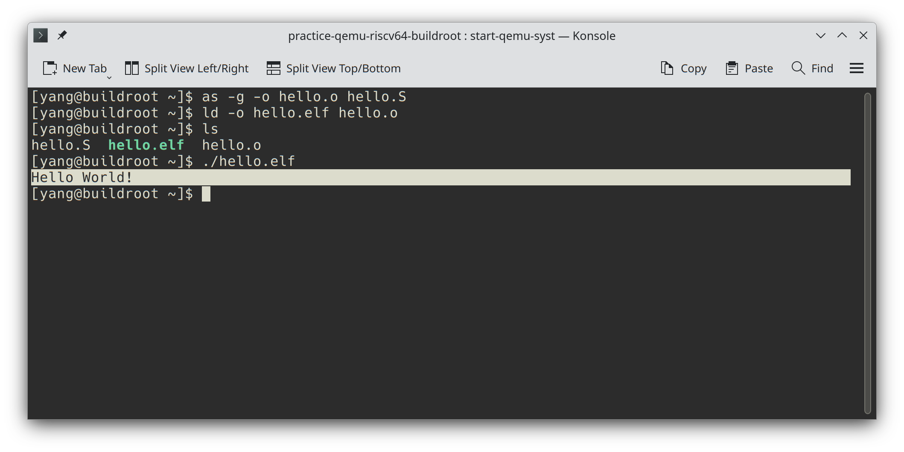
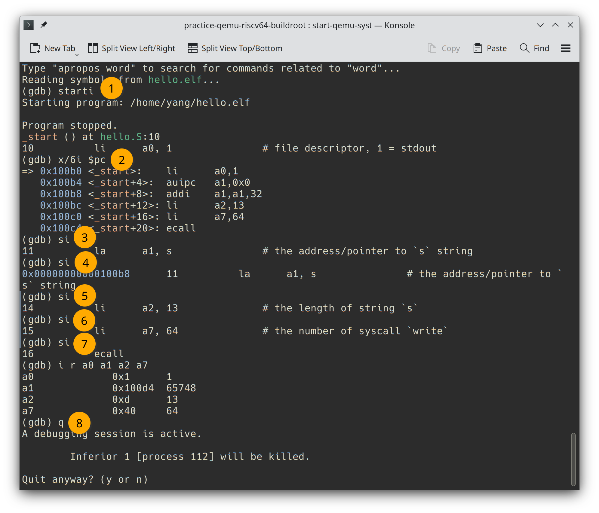

S10C02 RISC-V development using QEMU - Part 2 Build a base Linux system using Buildroot
This series articles will guide you setting up a RISC-V development environment using QEMU. The series includes four parts:
Part 1. Building a minimal RISC-V Linux system with only Linux kernel and BusyBox, and runs on the QEMU emulator.
Part 2. Building a base RISC-V Linux system with the ability of doing RISC-V assembly development and debug using Buildroot.
Part 3. Setting up a complete Debian RISC-V Linux system in QEMU, and do C language development and debug with GCC toolchains.
Part 4. Remote debugging with the GDB, and setup remote text editing and debugging by VSCode.
- 1. Get the Buildroot source code
- 2. Configure Buildroot
- 3. Select packages
- 4. Compile Buildroot
- 5. Boot the system
- 6. Check the system
- 7. Create a non-privileged user
- 8. Log in to the guest machine via SSH
- 9. RISC-V Assembly development
- 10. Debug program by GDB
- 11. Where is the GCC toolchain?
- 12. Conclusion
In the previous section, we built a minimal Linux system by compiling the Linux kernel and BusyBox. While the system contains a base Shell environment and is capable of running static linked user programs, it is not suitable for development purposes. In theory, we could add any software, such as ssh, vim, git or binutils and so on by compiling their source codes and copying the binaries and libraries into the image file. Actually, there is a project called Linux From Scratch that guides users through building the entire Linux system from source code. Although it’s an excellent tutorial for those who want to understand how Linux system are built, it can be challenging for beginners, and the process would be tedious and time consuming.
In this chapter, we will use a tool called Buildroot to download and compile software automatically, resulting in the creation of an image file. Buildroot is free and open-source, so you can check its source code if you want to know how it works.
1. Get the Buildroot source code
To get started, create a project folder in your home directory, let’s call riscv64-buildroot. Once created, change into the folder and clone the Buildroot source code repository via Git. After the download is complete, change into the buildroot directory and check out a stable version, e.g., 2023.02:
$ mkdir ~/riscv64-buildroot
$ cd ~/riscv64-buildroot
$ git clone https://git.buildroot.net/buildroot
$ cd buildroot
$ git checkout -b 2023.02
2. Configure Buildroot
Buildroot is capable of building Linux systems for various hardware platforms. You can check the board directory to see a list of all platform vendors and modules. Each platform has one or more corresponding default configurations located in the configs directory. Run the following command to configure a QEMU RISC-V target platform with default settings:
$ make qemu_riscv64_virt_defconfig
You can customize the target system by changing the image file capacity, adding packages, and more by execute the make menuconfig command:
$ make menuconfig
Check the following options:
Toolchain --->
* Install glibc utilities
* Enable C++ support
Build options --->
* Enable compiler cache
Filesystem images --->
* ext2/3/4
* ext4
exact size
* 2048M
Where the image size option requires manual input.
There are several selection markers in the menuconfig, and their meanings as follow:
[*]: Build into the kernel.[ ]: Do not build.<*>: Build into the kernel.< >: Do not build.<M>: Build as external module, this means that the result of the build of this item will not be included in the kernel, but in a separate file.
We won’t be using external modules in this section, so avoid using the marker <M>.
3. Select packages
Next, select the packages you need. Note that the option “Show packages that are also provided by busybox” must be selected first, otherwise some options will be unavailable. You can press the / key at any time to search for packages by name. The following is a list of recommended packages for building a RISC-V assembly development environment.
Target packages --->
* Show packages that are also provided by busybox
Compressors and decompressors --->
* bzip2
* gzip
* unzip
* xz-utils
* zip
* zstd
Debugging, profiling and benchmark --->
* gdb
* gdbserver
* full debugger
* TUI support
Development tools --->
* binutils
* binutils binaries
* check
* diffutils
* findutils
* flex
* gawk
* gettext
* git
* grep
* libtool
* make
* patch
* pkgconf
* sed
* tree
Hardware handling --->
* kbd
Interpreter languages and scripting --->
* python3
python3 module format to install --->
* .py sources and .pyc compiled
External python modules
* python-pip
Libraries --->
Crypto --->
* CA Certificates
openssl support
ssl library --->
* openssl
openssl
* openssl binary
Networking applications --->
iputils
* ping
* openssh
* wget
Shell and utilities --->
* bash
* bash completion
* file
* sudo
* time
* which
System tools
* coreutils
* Individual binaries
* htop
* shadow
* tar
Text editors and viewers --->
* less
* vim
* install runtime
Check out the Linux From Scratch Book for a detailed explanation of each package. Once you have selected your packages, select “Save” and “Exit” to exit the configuration interface.
4. Compile Buildroot
Run the make command to start the package download and compilation process.
$ make -j $(nproc)
The
$(nproc)is a command substitution that is replaced by the output of thenproccommand. Thenproccommand is used to display the number of CPU cores. So the above command will becomemake -j 6assuming there are 6 cores in your CPU. This will make the compilation process much faster since the code will be compiled with multiple threads.
Depending on the performance of your machine, you may have time for a cup of tea or perhaps another biscuit while the download and compilation are completed. Afterward, the resulting files will be located in the output/images directory. Checking with the ls command:
$ ls -lh output/images
The output will resemble the following:
total 252M
-rw-r--r-- 1 yang yang 119K Mar 4 02:58 fw_dynamic.bin
-rw-r--r-- 1 yang yang 1.1M Mar 4 02:58 fw_dynamic.elf
-rw-r--r-- 1 yang yang 119K Mar 4 02:58 fw_jump.bin
-rw-r--r-- 1 yang yang 1.1M Mar 4 02:58 fw_jump.elf
-rw-r--r-- 1 yang yang 19M Mar 4 02:59 Image
-rw-r--r-- 1 yang yang 2.0G Mar 4 03:01 rootfs.ext2
lrwxrwxrwx 1 yang yang 11 Mar 4 02:59 rootfs.ext4 -> rootfs.ext2
-rw-r--r-- 1 yang yang 86M Mar 4 02:59 rootfs.tar
-rwxr-xr-x 1 yang yang 499 Mar 4 02:59 start-qemu.sh
5. Boot the system
To boot the target system, use the following command:
qemu-system-riscv64 \
-machine virt \
-m 1G \
-bios ./buildroot/output/images/fw_jump.elf \
-kernel ./buildroot/output/images/Image \
-append "rootwait root=/dev/vda ro" \
-drive file=./buildroot/output/images/rootfs.ext2,format=raw,id=hd0 \
-device virtio-blk-device,drive=hd0 \
-netdev user,id=net0,hostfwd=tcp::10022-:22 \
-device virtio-net-device,netdev=net0 \
-nographic
Compare to the previous chapter, there are three new QEMU parameters:
-bios ./buildroot/output/images/fw_jump.elf: This specifies the BIOS firmware. Thefw_jump.elfis actually the OpenSBI, which is generated by Buildroot. Note that when omitting the-biosparameter, the QEMU builtin one will be loaded. In this case, we should use the Buildroot version.-netdev user,id=net0,hostfwd=tcp::10022-:22and-device virtio-net-device,netdev=net0: These parameters are used to assign a virtual network interface to the virtual machine, andhostfwd=tcp::10022-:22means redirect TCP port 10022 from host to port 22 of the virtual machine.
The virtual machine created by QEMU is also called the guest machine, the name it is related to the host machine, which is the machine running QEMU.
Once the command is executed, many message will be shown, generated by OpenSBI, kernel and the init process. You can safely ignore them if there is no error message.
The message will be ended with two lines: Welcome to Buildroot and buildroot login, enter the user name root without password to log in.
buildroot login: root
6. Check the system
You can do a quick check to validate whether the cpu module, memory size, kernel version and storage space match what you configured:
# uname -a
Linux buildroot 5.15.43 #1 SMP Tue Mar 4 07:31:21 CST 2023 riscv64 GNU/Linux
# free -h
total used free shared buff/cache available
Mem: 988.5M 19.4M 961.0M 48.0K 8.0M 959.1M
Swap: 0 0 0
# df -h
Filesystem Size Used Avail Use% Mounted on
/dev/root 2.0G 151M 1.7G 9% /
devtmpfs 494M 0 494M 0% /dev
tmpfs 495M 0 495M 0% /dev/shm
tmpfs 495M 24K 495M 1% /tmp
tmpfs 495M 24K 495M 1% /run
# cat /proc/cpuinfo
processor : 0
hart : 0
isa : rv64imafdch_zicsr_zifencei_zihintpause_zba_zbb_zbc_zbs_sstc
mmu : sv48

Next, check the installed packages:
# python --version
Python 3.11.2
# git --version
git version 2.40.0
# wget --version | head -n 1
GNU Wget 1.21.3 built on linux-gnu.
# vim --version | head -n 1
VIM - Vi IMproved 9.0 (2022 Jun 28, compiled Mar 12 2023 17:15:56)
Note the output text may be slighty different from your guest machine.
7. Create a non-privileged user
It’s easy to make mistakes when operating with the root user, so it’s good practice to creat a non-privileged user after system is installed, and switch to it as soon as possible.
To begin, create a user named yang (or the username you usually use) and set its password:
$ useradd -m -s /bin/bash yang
$ passwd yang
Next, add the user to the sudo group, which makes it possible to promote privileges when needed.
$ usermod -a -G sudo yang
Make sure the
shadowpackage is selected in Buildroot package selecting step, as theuseraddandusermodcommands are provided by this package.
Switch to the newly created user and check its privileges.
$ su - yang
$ id
uid=1000(yang) gid=1000(yang) groups=1000(yang),102(sudo)
The above text 102(sudo) indicates this account has been successfully added to the sudo group. Try running the following command:
$ sudo cat /etc/sudoers
It should not produce any errors.
Create a file .bash_profile in the home directory and add the following text to it to improve your experience:
alias ls='ls --color=auto'
PS1='[\u@\h \W]\$ '
Run the command $ source ~/.bash_profile to make it take effect. Your custom base Linux system is now fully set up.
8. Log in to the guest machine via SSH
Since there may be some minor text rendering defects in the QEMU terminal, it’s better to access the guest machine via SSH. Make sure that the openssh package is selected in the Buildroot package selecting step, the SSH daemon (a background process) will start automatically. Open another Terminal window and run the following command:
$ ssh -p 10022 yang@localhost
9. RISC-V Assembly development
The GNU Assembler and Linker are included in the binutils package. You can write some assembly code and assemble it into an executable program file to run it in the guest machine.
To do this, create a file named hello.S in the home directory, and add the following text:
.text
.global _start
_start:
# calling convention
# a0-a2 - parameters to Linux function
# a7 - Linux function number
# call `write(int fd, char* s, int len)`
li a0, 1 # file descriptor, 1 = stdout
la a1, s # the address/pointer to `s` string
# `la a1, s` is equivalent to
# `lui a1, %hi(s)` and `addi a1, a1, %lo(s)`
li a2, 13 # the length of string `s`
li a7, 64 # the number of syscall `write`
ecall
# call `exit(int)`
addi a0, x0, 0 # return code must be from 0 to 255
addi a7, x0, 93 # the number of syscall `exit`
ecall
.section .rodata
s:
.asciz "Hello World!\n"
If you are interested in the RISC-V assembly language, check out another series of my articles: Gentle RISC-V Assembly Language Tutorial.
Next, assemble and link the file:
$ as -g -o hello.o hello.S
$ ld -o hello.elf hello.o
This will generate a file named hello.elf. Try running it, a line of text reading “Hello World!” will be displayed if there are no exceptions.
$ ./hello.elf
Hello World!

10. Debug program by GDB
The gdb package has also been installed. Let’s start debugging main.elf:
$ gdb hello.elf
and run some GDB commands:
(gdb) starti
Starting program: /home/yang/hello.elf
Program stopped.
_start () at hello.S:10
10 li a0, 1 # file descriptor, 1 = stdout
(gdb) x/6i $pc
=> 0x100b0 <_start>: li a0,1
0x100b4 <_start+4>: auipc a1,0x0
0x100b8 <_start+8>: addi a1,a1,32
0x100bc <_start+12>: li a2,13
0x100c0 <_start+16>: li a7,64
0x100c4 <_start+20>: ecall
(gdb) si
11 la a1, s # the address/pointer to `s` string
(gdb) si
0x00000000000100b8 11 la a1, s # the address/pointer to `s` string
(gdb) si
14 li a2, 13 # the length of string `s`
(gdb) si
15 li a7, 64 # the number of syscall `write`
(gdb) si
16 ecall
(gdb) i r a0 a1 a2 a7
a0 0x1 1
a1 0x100d4 65748
a2 0xd 13
a7 0x40 64
(gdb) q
A debugging session is active.
Inferior 1 [process 165] will be killed.
Quit anyway? (y or n) y

As shown above, this Linux system already contains common tools and is capable of base assembly development and program debugging.
11. Where is the GCC toolchain?
Unfortunately, the gcc package is not available in Buildroot, as explained in the Buildroot documentation. If you have patient enough, you can compile the GCC toolchains from source and copy it into the guest machine, It may be helpful to check out some scripts such as musl-riscv-toolchain and musl-cross-make.
Alternatively, you can download the pre-compiled RISC-V crossing compilation toolchains from toolchains.bootlin.com and the native compilation toolchains from musl.cc. But these are beyond the scope of this chapter.
12. Conclusion
In this section, we built a base Linux system that contains general tools as well as binutils and gdb using Buildroot. However, it is still not complete, for example, the GCC toolchain is missing, and there is no package management tool, making it difficult to install or update software.
In the next section, we will set up a complete Debian distribution in QEMU.